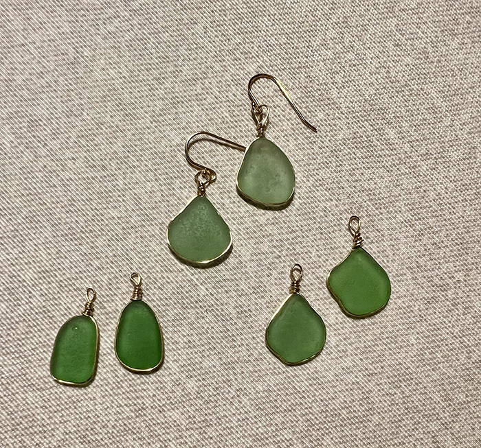

HAVGLAS SMYKKER

På denne side kan du udforske forskellige typer havglas, og få indsigt i, hvordan du kan bruge det i dine kreative projekter. Vi deler viden om de smukke farver, der findes i havglas, forskellen mellem naturglas og tumlet glas. Og selvfølgelig om hvordan glasset kan bruges til smykker!